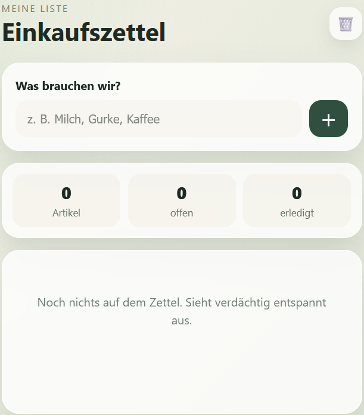

02Demo verfügbar
Einkaufszettel
Kategorie: Demos · Lernprojekte
Eine kleine Anwendung, um Einkäufe übersichtlich zu sammeln, zu verwalten und im Alltag schneller den Überblick zu behalten.
FokusListen, Eingaben, Übersicht
TechnikHTML, CSS, JavaScript